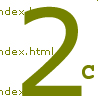
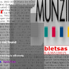

|
2002 "illegal
immigrant dis.information" by Darko
Fritz
Darko wrote to us:"i have been disscussing with few programmers
over last half year about my project's needs, techinically almost
identical as in your work. but, not finding time/money/time/money
to realize it. finding your project on-line make it possible and
my life is easyest now. so, thanks, i hope you like the [mis]use
of your programme."
|
 |
2001
"Eventmodul::anonymous.databody.muttering"
by Knowbotic Research in cooperation with with Max Rheiner, Peter
Sandbichler, krungkuene.org
KR uses the TraceNoizer Clone Engine to clone the databodies of
the participants of ART01 one of the largest art fairs in the world
taking place annually in basel and then uses them in an installation
which is show in basel simulaneously. In this installation, visitors
can activate the databodies of several ART Basel -participants,
while these data streams in turn trigger acoustic and optical signals,
and thus provide a spatial experience. |
 |
2001 clone-it
1 by LAN
and Knowbotic Research in cooperation
with [plug_in]
The data is the clones generated for KR's anonymous databody muttering.
clone data is printed on stickers and dissiminated in basel during
the ART01. the same data is also sent in alphabetical order to net
critical mailinglists as well as shown on the website to create
a viral presence for the anonymous databody installation and for
clone-it itself as well as for tracenoizer which is being tested
by [plug_in] visitors.
|
|  |
2001
clone-it 2 by
LAN. Produced for the COMBInite Party
at the Zürich University of Art and Design. All teachers of
the school were cloned. Allthough these teachers were informed of
this none reacted until two to three months later when the search-engines
had picked up the clones. From that moment on a general panic spread
among the teachers. Emails started piling up in our mailboxes and
the head of our department got angry calls from colleagues whose
google-result was tainted by clones generated by clone-it software.
Because the situation got more and more serious we asked a media
law expert to evaluate the case. He came up with the this statement.
There was also a meeting with the victims of the cloning. |
|  |
2001clone-visualization by LAN.
To accompany the display of tracenoizer in public spaces the clone-visualization
was built. This visualizes different flows of data that TraceNoizer
processes when making a clone-page. It uses either the clone-it
data as a basis of visualization but can also visualize a clone
as it is being made by tracenoizer.
|